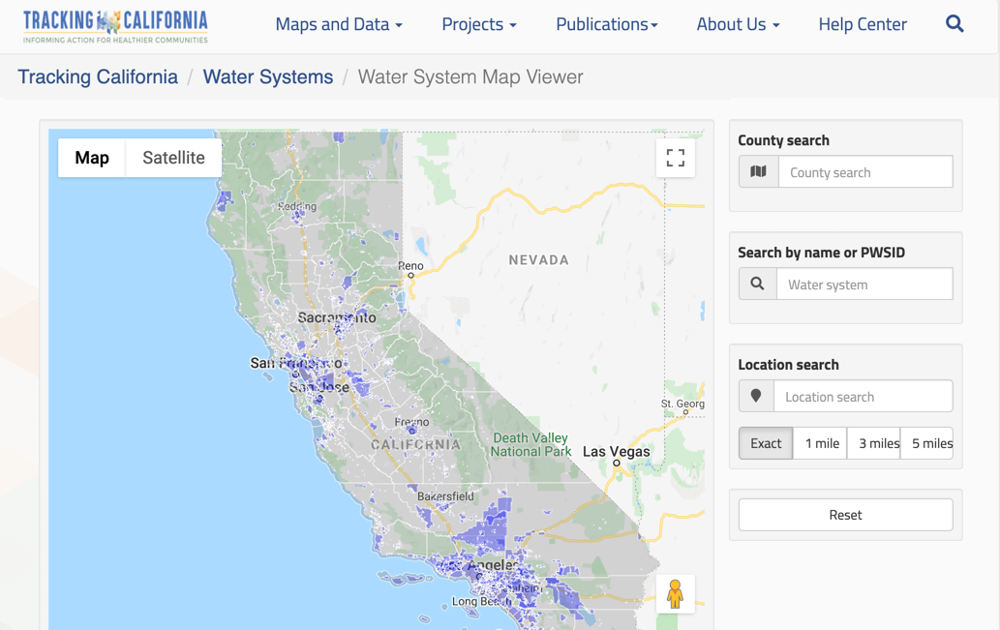

After eight years of operation, Tracking California retired the Water Boundary Tool (WBT) on July 1, 2020. The creation of the WBT began over a decade ago in order to support public health research, planning, and emergency response. Successes of the WBT include:
- Collecting boundaries for over 4,800 public water systems
- Providing data to over 6,200 users
- Supporting numerous public health activities, including:
- Preventing exposure to water contamination
- Identifying communities at risk for unsafe or insufficient drinking water
- Targeting public health services
- Conducting research studies
- Water system management and consolidation
- Drought planning
- Emergency planning and disaster response
- Environmental impact reports and city planning
- Inspiring and informing the development of similar tools in other states, including Tennessee and Texas
Tracking California had been operating the WBT and providing user support with insufficient funds for many years, and the decision was made to retire the tool.
At the same time, the State has also come to acknowledge the essential nature of these data. Building upon Tracking California's vision and demonstrated success of the WBT, the CA Waterboards has begun building its own tool and intends to take on the assembly and maintenance of public water system service area boundaries. While we have discontinued the collection of water system boundaries, Tracking California will continue to make our data available while the Waterboards works to establish its program.
In addition to supporting many public health efforts through the collection of water system boundary data, Tracking California's WBT has also made a lasting impact on public health by paving the way for the institutionalized collection of these essential data in California and beyond.
> Thank you for your leadership in the drinking water domain. I have long admired the WBT. Your work inspired me to create a similar tool for the state of Tennessee that we hope to complete by the end of the year. I have been conducting a systematic review of the current state of geospatial representation of US Public Water Systems and your site is coveted by all. Again, thank you for demonstrating that we can have a spatial representation of public water system boundaries - it takes a lot of effort but is worth it!
– Yolanda J. McDonald, Assistant Professor, Vanderbilt Institute for Energy and Environment